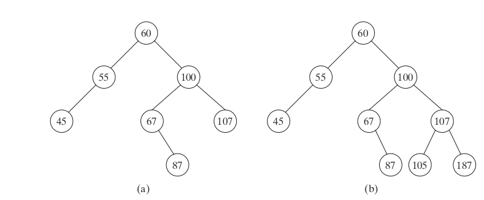
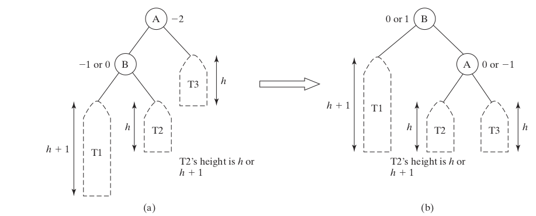
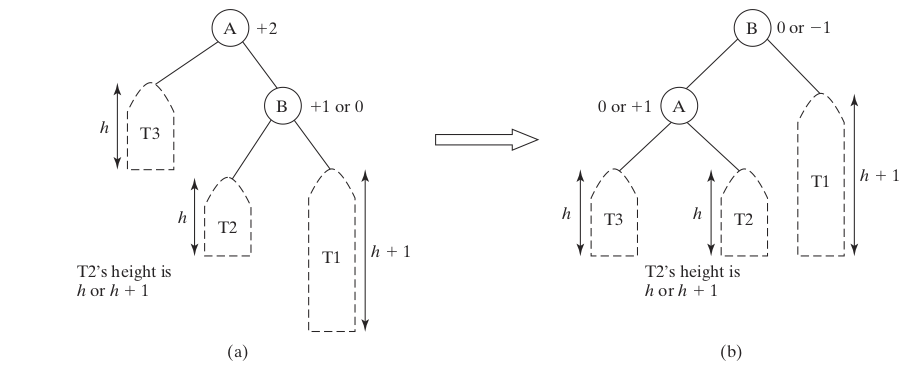
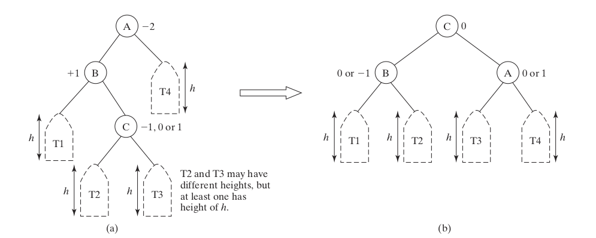
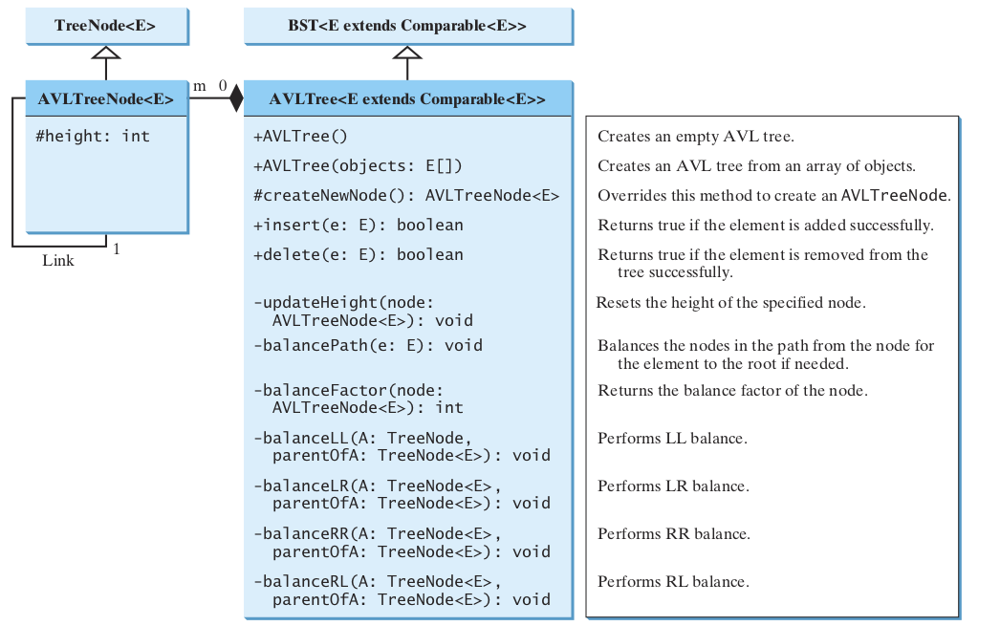
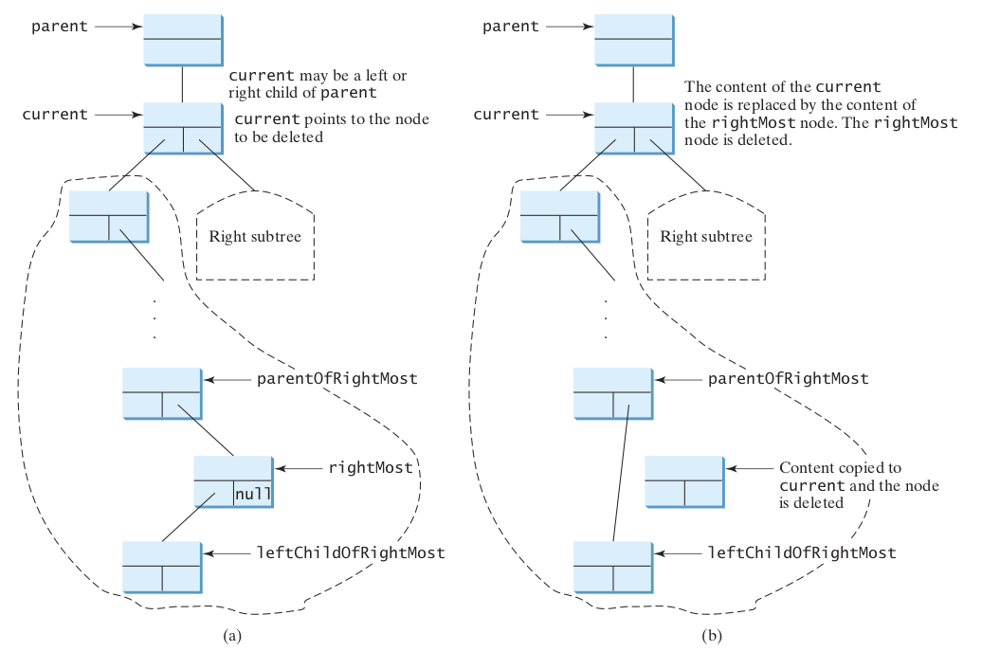

DSA Lecture
9. AVL Trees
April 3, 2019
Introduction
Objectives
To know what an AVL tree is (§26.1).
To understand how to rebalance a tree using the LL rotation, LR rotation, RR rotation, and RL rotation (§26.2).
To design the AVLTree class by extending the BST class (§26.3).
To insert elements into an AVL tree (§26.4). ## Objectives {#objectives-1 }
To implement tree rebalancing (§26.5).
To delete elements from an AVL tree (§26.6).
To implement the AVLTree class (§26.7).
To test the AVLTree class (§26.8).
To analyze the complexity of search, insertion, and deletion operations in AVL trees (§26.9).
Motivation
- Chapter 25 introduced binary search trees.
- The search, insertion, and deletion times for a binary tree depend on the height of the tree.
- In the worst case, the height is O(n). If a tree is perfectly balanced–i.e., a complete binary tree—its height is log n.
- Can we maintain a perfectly balanced tree? Yes, but doing so will be costly.
- The compromise is to maintain a well-balanced tree—that is, the heights of every node’s two subtrees are about the same.
History
- AVL trees were invented in 1962 by two Russian computer scientists, G. M. Adelson-Velsky and E. M. Landis
- Thus, they are named AVL Trees
Overview
- In an AVL tree, the difference between the heights of every node’s two subtrees is 0 or 1.
- It can be shown that the maximum height of an AVL tree is O(log n).
Balance
- The process for inserting or deleting an element in an AVL tree is the same as in a regular binary search tree, except that you may have to rebalance the tree after an insertion or deletion operation.
- The balance factor of a node is the height of its right subtree minus the height of its left subtree.
- A node is said to be balanced if its balance factor is -1, 0, or 1. A node is considered left-heavy if its balance factor is -1, and right-heavy if its balance factor is +1.
Balance
What is the balance of each need in these trees?
Rebalancing Trees (26.2)
Rebalancing
Key Point
After inserting or deleting an element from an AVL tree, if the tree becomes unbalanced, perform a rotation operation to rebalance the tree.
Rebalancing
- If a node is not balanced after an insertion or deletion operation, you need to rebalance it.
- The process of rebalancing a node is called rotation.
- There are four possible rotations: LL, RR, LR, and RL.
LL Imbalance and Rotation
- An LL imbalance occurs at a node A, such that A has a balance factor of -2 and a left child B with a balance factor of -1 or 0
- This type of imbalance can be fixed by performing a single right rotation at A, as shown in the figure below.
LL Imbalance and Rotation
RR Imbalance and Rotation
- An RR imbalance occurs at a node A, such that A has a balance factor of +2 and a right child B with a balance factor of +1 or 0
- This type of imbalance can be fixed by performing a single left rotation at A, as shown in the figure below.
RR Imbalance and Rotation
LR Imbalance and Rotation
- An LR imbalance occurs at a node A, such that A has a balance factor of -2 and a left child B with a balance factor of +1
- Assume B’s right child is C. This type of imbalance can be fixed by performing a double rotation (first a single left rotation at B and then a single right rotation at A), as shown in the figure below.
LR Imbalance and Rotation
RL Imbalance and Rotation
- An RL imbalance occurs at a node A, such that A has a balance factor of +2 and a right child B with a balance factor of -1
- Assume B’s left child is C.
- This type of imbalance can be fixed by performing a double rotation (first a single right rotation at B and then a single left rotation at A), as shown in the figure below.
RL Imbalance and Rotation

Designing Classes for an AVL Tree (26.3)
Implementation
- Since an AVL tree is a binary search tree, AVLTree is designed as a subclass of BST.
Implementation
Overriding the insert method
Overriding insert
- Inserting an element into an AVL tree is the same as inserting it to a BST, except that the tree may need to be rebalanced.
- A new element is always inserted as a leaf node.
- As a result of adding a new node, the heights of the new leaf node’s ancestors may increase.
- After inserting a new node, check the nodes along the path from the new leaf node up to the root.
- If an unbalanced node is found, perform an appropriate rotation using the algorithm
Overriding insert
balancePath method
private void balancePath(E e) {
java.util.ArrayList<TreeNode<E>> path = path(e);
for (int i = path.size() - 1; i >= 0; i--) {
AVLTreeNode<E> A = (AVLTreeNode<E>)(path.get(i));
updateHeight(A);
AVLTreeNode<E> parentOfA = (A == root) ? null :
(AVLTreeNode<E>)(path.get(i - 1));
switch (balanceFactor(A)) {
case -2:
if (balanceFactor((AVLTreeNode<E>)A.left) <= 0) {
balanceLL(A, parentOfA); // Perform LL rotation
}
balancePath method
Checkpoint
Checkpoint
Checkpoint
Implementing Rotations
Implementing Rotations
Key Point
An unbalanced tree becomes balanced by performing an appropriate rotation operation.
LL Rotation
/** Balance LL (see Figure 27.1) */
private void balanceLL(TreeNode<E> A, TreeNode<E> parentOfA) {
TreeNode<E> B = A.left; // A is left-heavy and B is left-heavy
if (A == root) {
root = B;
}
else {
if (parentOfA.left == A) {
parentOfA.left = B;
}
else {
parentOfA.right = B;
}
}
A.left = B.right; // Make T2 the left subtree of A
B.right = A; // Make A the left child of B
updateHeight((AVLTreeNode<E>)A);
updateHeight((AVLTreeNode<E>)B);
}Implementing delete
Implementing delete
Key Point
Deleting an element from an AVL tree is the same as deleing it from a BST, except that the tree may need to be rebalanced.
Deletion
There are two possible cases with different algorithms for deletion:
- If the deleted has no left child
- If the deletd node has a left child
Deletion Without Left Child
Deletion Without Left Child
- When this deletion happens, the height of the nodes from the parent node up to the root may have decreased
- Therefore, we must call
balancePath(parent.element)
Deleting With Left Child
Deleting With Left Child
- When this deletion happens, the height of the nodes along the path from
parentOfMostRightmay change.
- Therefore, we must call
balancePath(parentOfRightMost)
AVLTree Class
AVL Tree Time Complexity
AVL Tree Time Complexity
Key Point
Since the height of an AVL tree is O(log n), the time complexity of the search, insert, and delete methods in AVLTree is O(log n).
AVL Tree Time Complexity
- The time complexity of the search, insert, and delete methods in AVLTree depends on the height of the tree.
- We can prove that the height of the tree is O(log n).
AVL Tree Time Complexity
- Let G(h) denote the minimum number of the nodes in an AVL tree with height h.
- G(1) is 1 and G(2) is 2.
- The minimum number of nodes in an AVL tree with height h >= 3 must have two minimum subtrees: one with height h - 1 and the other with height h - 2.
- Thus G(h) = G(h-1) + G (h-2) + 1
AVL Tree Time Complexity
- Recall that a Fibonacci number at index i can be described using the recurrence relation F(i) = F(i - 1) + F(i - 2).
- Therefore, the function G(h) is essentially the same as F(i).
- It can be proven that h < 1.4405\ log(n + 2) - 1.3277
- Hence, the height of an AVL tree is O(log n)
AVL Tree Time Complexity
- The search, insert, and delete methods involve only the nodes along a path in the tree.
- The updateHeight and balanceFactor methods are executed in a constant time for each node in the path.
- The balancePath method is executed in a constant time for a node in the path.
- Thus, the time complexity for the search, insert, and delete methods is O(log n).